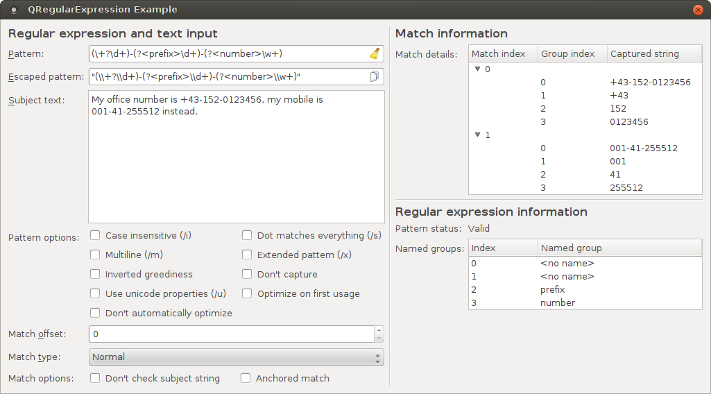

QRegularExpression Example
The QRegularExpression example shows how regular expressions in Qt are applied to text by providing an environment in which new regular expressions can be created and tested on custom text strings.
The example makes usage of the QRegularExpression class, which has been introduced in Qt 5.0. QRegularExpression implements Perl-compatible regular expressions, supporting a number of advanced matching features, such as case insensitive matching, multiline matching, Unicode properties selectors and partial/incremental matching.
QRegularExpression is a big improvement over QRegExp in terms of features and performance and should be used in all new code.
